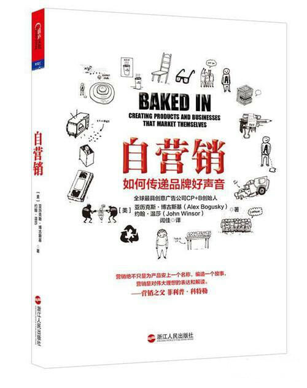

注：【】部分为笔者心得，非原文摘抄。
- 营销的过程，就是去挖掘、寻找、讲述埋在产品里面的故事。
- 只有把营销直接融入到产品里面，才能取得成功。
- 品牌的作用是让人们迅速识别一种产品，讲诉一个与产品相吻合的故事。
- 把创造力用到企业的方方面面。
- 产品设计和创新必须爬升到企业阶梯的最顶端，并加入到公司战略中心的营销环节中去。
- 【精简机构不是保持组织活力的高效办法，而是要从一开始就坚持严格控制人员规模。】
- 臃肿的组织结构永远诞生不了伟大的创新。
- 产品永远是最强大的品牌建设营销工具。
- 理解新创意和自营销的最佳途径，就是亲身去体验。
- 一个好听的名字能带来很大的帮助，而更重要的是，一个难听的名字能形成很大的反作用。
- 永远也不要低估名字里蕴藏的营销能量。
- 一个震撼人心的故事能把战略问题的诸多不同元素融合到一起，带个人们动力，启发人们行动。
- 把产品做到极致，是一种极为强大的营销理念。
- 走极端最棒的一点，在于你想出来的说法不一定非得是正面的。
- 产品其实是在帮助我们更好地理解世界。
- 市场营销应该在任何时候都必须避免中庸，因为中庸意味着没戏。
- 让无形的东西变得让人看得见，是把营销融入产品的一种有力方式。要把了不起的想法植入产品中，而不是包装上。包装可以扔掉，而产品不会。
- 产品没能把自己的独特之处告诉用户，用户也就无法借助它们去告诉别人自己为什么要使用这个产品。
- 不是要把我们的故事讲得更好，而是要直接创造出一个更好的故事来。——Lee Scott
- 冲突，造就了产品的唯一性，这正是让产品脱颖而出的关键。最成功的品牌把文化的冲突和张力作为杠杆，推动变革，最终改变了文化。
- 与其叫别人打破你产品所在的行业现状，还不如自己动手。
- 失败往往只是斜横在成功路上的一个念头，并非最终的结果。
- 大无畏的方法可以为你和你周围的人带去创新的信心，尤其是在这充满了不确定的年代。
- 人人都对未知的东西有点小小的恐惧。在这种背景下经历害怕，你就知道，要是你脖子后面的汗毛立了起来，呼吸紧张了起来，那就是来到真正的创新空间了。
- 必须打破规则，把产品设计的一眼看上去就与众不同。如果你做到了，不光产品能脱颖而出，竞争对手的争相效仿也会成为你的最佳广告。
- 批评你最厉害的人反倒会变成你最好的合作伙伴最狂热的粉丝。
- 想成为强大的共同创作者，你必须把恐惧抛到一边，克制你内心的控制欲。
- 不排斥外界，尤其是来自客户的潜在意见。
- 要让你品牌社区里的成员们自己摸索着前进，不管他们是公司内部的人，还是外部的人。
- 【切忌输在沟通！】
- 有效的设计直觉根植于现实、逻辑、知识和经验。
- 从擅长产品和营销创新到精通产品和营销创新，设计直觉是必经之路。但要闯入未知的未来，还要把勇气摆在设计直觉的核心。
- 渐进式改良不是真正的创新。
- 当异类需要勇气，它不光意味着要和竞争对手选择不同的道路，还意味着要走跟整个文化既定规范不同的道路。
- 找到好点子很容易，可要让这些点子契合市场，这才是要下苦功夫的地方。
- 不成熟的诗人模仿别人；成熟的诗人巧取别人。——Thomas Stearns Eliot
- 【要想成为一位优秀的创新者，首先要让自己具备多元化的知识储备。】
- 做个敏锐的观察者，跳出自己的文化视角，寻找那些荒谬的东西、不协调的东西、貌似不合理的东西。
- 如果社会准备好要迎接一种趋势，那么，几乎任何人都可以启动它。可是要是社会没有准备好，谁也奈何不了它。——Duncan Watts
- 【与其花重金请明星，比如让自己的员工来演绎产品的广告。有哪位明星比产品的设计者更喜欢这款产品呢？】
- 成功的关键，就是要在模糊的界限上找对方向。
- 【喜欢的事，不一定非要变成自己的职业。有这样的想法，反而可以做更多喜欢的事。】
- 在循环模式里，“新颖”和“改良”是两个最有力的字眼，而在创新的世界里，“牺牲”和“简化”才是最有力的字眼。
- 找到改变市场的绝佳点子才是目标。
- 要把创新植入公司的所有利益相关人员，鼓励，同时也授权每一个人，让他们都把创新视为自己日常工作的一部分。
- 公司要把自己的历史挖掘出来，作为灵感之源，甚至前进的向导。
- 重新发现最初的愿景，可以创造出一个更深刻的品牌故事。
- 违背企业最初的使命和价值观很危险。
- 只有借助全局性思考，才能让创新真正实现成功。
- 相关领域内消费者行为上的细微变化，能造就最大的不同。
- 只要有恰当的鼓励，创新可以从任何地方喷发出来。
- 从亲自使用你的产品着手，同时更重要的是，把这种做法变成公司组织文化的一部分。
- 公司与客户的沟通越是流畅，客户就越是信任你。
- 让组织的每位成员都知道正在进行的所有活动，是让整个组织变得更聪明的办法，而且它最简单，最快捷，
- 【乔布斯时代的苹果保密风格只是极罕见的成功个例，不足效仿。】
- 许多组织并不缺乏了不起的创新思想，也不是没有创新的意愿；相反，组织内封闭和毫无活力的流程才是路障。
- 任何形式主义都是创新的天敌，包括为鼓励创新而制定的制度和条例。
- 创新大多发生在学科的内外交叉点。
- 只有乐观主义者才能把事情做成。——Graig Venter
- 设计和创新是在地球上生存的关键。
- 你无须对品牌保持忠诚，而是忠诚于自己创造的东西。